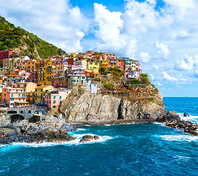
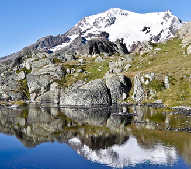
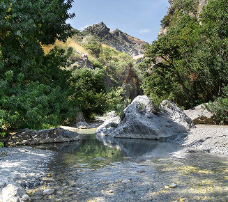

I parchi nazionali italiani offrono esperienze variegate a contatto con la natura, combinando attività ricreative, educative e culturali. Si possono praticare escursioni e trekking su percorsi di diversa difficoltà, con la possibilità di informarsi presso centri visita lungo i sentieri. Per chi cerca approfondimenti, ci sono visite guidate e laboratori didattici su ecosistemi, geologia e fauna. I parchi sono anche luoghi ideali per sport all’aria aperta come arrampicata, mountain bike, sci, kayak e snorkeling, oltre al birdwatching. Completano l’offerta eventi dedicati ai prodotti tipici e alla cultura locale, con itinerari che includono borghi storici e siti archeologici, offrendo così un’esperienza completa tra natura e tradizione.
Parchi in Primo Piano

Altri Parchi


